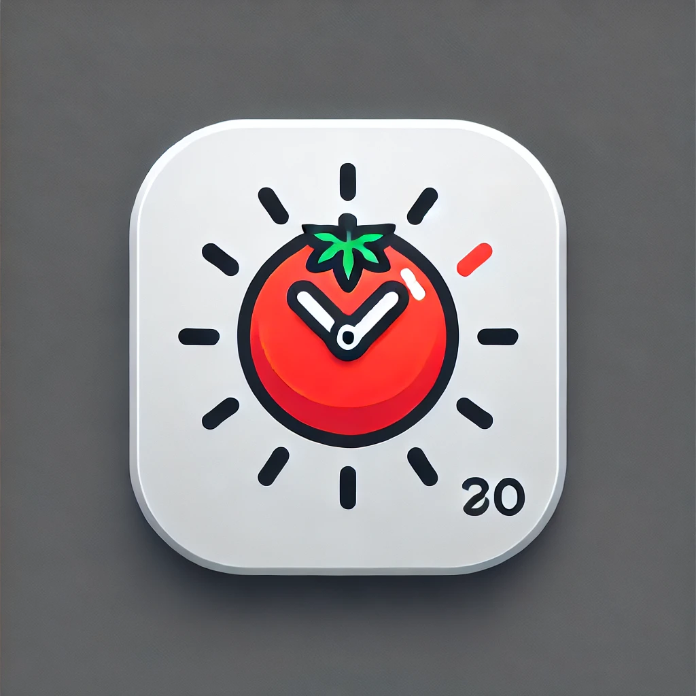

Pomodoro Timer
Pomodoro Length (minutes):
Break Length (minutes):
Alarm Length (seconds):
Alarm volume:
5
View Log History
25:00
Start Work
Start Break
Reset
Finish Early
Pause
Delete last log
Completed Pomodoros
Show Only Today's Logs
Today's Progress
"The secret of getting ahead is getting started." – Mark Twain